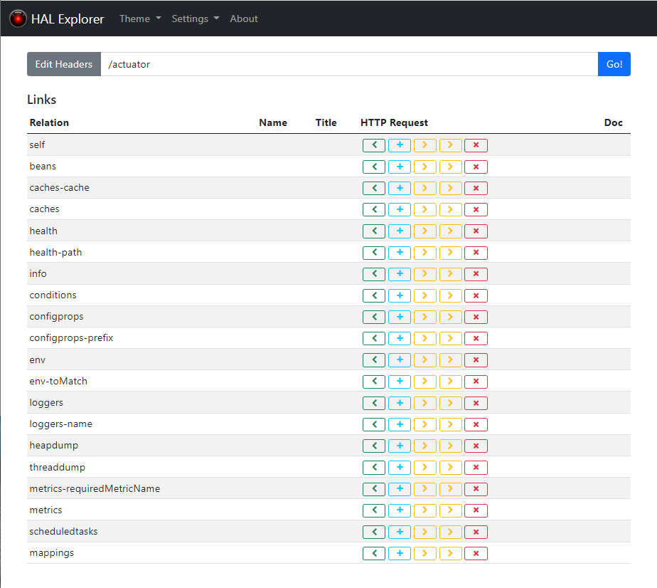
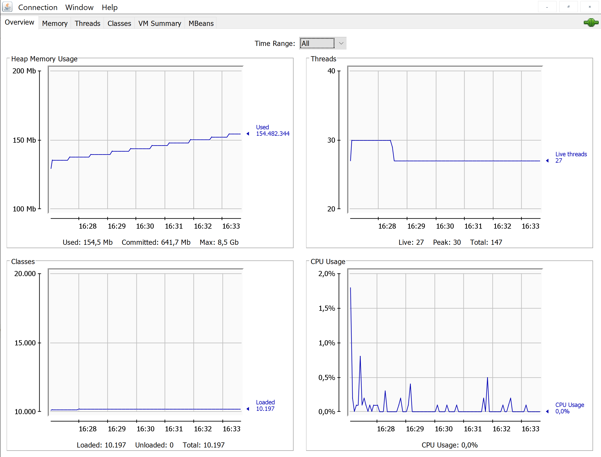

SpringDataRest¶
https://spring.io/projects/spring-data-rest
Progetto SpringDataRest. Esempio di sviluppo di un’applicazione CRUD: SpringDataRest: requisiti
Impostazione del server HTTP SpringDataRest: HIController.
Parte HumanToMachine dell’applicazione:
Parte MachineToMachine dell’applicazione:
La descrizione (ex Swagger) SpringDataRest: descrizione OpenAPI
SpringDataRest: requisiti¶
Costruire una applicazione (un sistema software) che permette la gestione CRUD di informazioni relative a persone. L’applicazione deve essere resa disponibile in rete attraverso una API Restful.
SpringDataRest: user story¶
Come utente del servizio mi aspetto che, …
SpringDataRest: analisi¶
Dopo interazione con il committente, le informazioni relative a persone possono essere formalmente espresse dalla seguente classe Java:
Person¶
public class Person {
private long id;
private String firstName;
public String toString(){
return "person id="+id+" firstName="+firstName + " lastName="+lastName;
}
I metodi get/set delle proprietà sono omessi perchè qui non essenziali.
Gestore CRUD¶
Il gestore logico dei dati richiesto dal committente è molto semplice: realizza un elenco di Person e offre operazioni per aggiungere/eliminare elementi dall’elenco e cercare/ottenere elementi.
parte CREATE: addPerson
parte READ: getFirst, getLast, getAllPersons, getPersonWithLastName
parte UPDATE: todo
parte DELETE: removePerson
Il gestore implicato dai requisiti può essere formalizzato dalla seguente classe Java:
DataHandler¶
public class DataHandler {
private static Vector<Person> userDataList = new Vector<Person>();
private static int id = 0;
private static void addNewPerson(){
Person userData = new Person();
userData.setId(id);
userData.setFirstName("dummy");
userData.setLastName("dummy");
userDataList.add(userData);
id++;
}
public static void addPerson(Person userData){
userDataList.add(userData);
}
public static List<Person> getAllPersons(){
return userDataList;
}
public static Person getLast(){
if( userDataList.isEmpty()) addNewPerson();
return userDataList.lastElement();
}
public static Person getFirst(){
if( userDataList.isEmpty()) addNewPerson();
return userDataList.firstElement();
}
public static String getPersonWithLastName(String lastName){
String pFound = "person not found";
//Scandisce userDataList cercando la prima persona con lastName
...
return pFound;
}
public static void removePerson(Person p){
userDataList.remove(p);
}
}
SpringDataRest: API Restful¶
Al momento questo requisito suggerisce l’uso di un framework specializzato come SpringBoot.
HATEOAS sta per Hypermedia as the Engine of Application State.
HAL (Hypertext Application Language) fornisce un formato coerente per il collegamento ipertestuale tra le risorse.
SpringDataRest: piano di lavoro¶
Creazione di un progetto SpringBoot con interazioni HumanMachine (hm) e MachineToMachine (m2m)
Testing con RestTemplate ()
Swagger
SpringDataRest: impostazione del workspace¶
Il codice completo del progetto si trova in progetto SpringDataRest.
SpringDataRest: build.gradle iniziale¶
Il progetto inizia con le seguenti dipendenze nel file build.gradle:
dependencies {
implementation 'org.springframework.boot:spring-boot-starter-data-rest'
implementation 'org.springframework.boot:spring-boot-starter-web'
testImplementation 'org.springframework.boot:spring-boot-starter-test'
//Lombok
compileOnly 'org.projectlombok:lombok'
annotationProcessor 'org.projectlombok:lombok'
//For java HTTP caller
implementation 'com.squareup.okhttp:okhttp:2.7.5'
//Human-machine interface
implementation "org.springframework.boot:spring-boot-starter-thymeleaf"
}
Progetto SpringDataRest - business logic¶
Il codice che definisce la business logic della applicazione è organizzato su due classi:
La classe Person che rappresenta i dati
La classe DataHandler che rappresenta il gestore logico dei dati
PersonGuiNaive¶
<!DOCTYPE html>
<html xmlns="http://www.w3.org/1999/xhtml"
xmlns:th="http://www.thymeleaf.org">
<head>
<title>PersonGuiNaive</title>
<style> ... </style>
</head>
<body>
<h1>UserData Gui</h1>
<h2>Last Person inserted</h2>
<div ID="LASTPERSON">
id=<span th:text="${lastperson.id}">Replaceable text</span >
firstName=<span th:text="${lastperson.firstName}">Replace text</span >
lastName=<span th:text="${lastperson.lastName}">Replace text</span >
</div>
<h2>Insert a new Person</h2>
<form method="POST" action="/Api/createPerson" th:object="${personmodel}">
<label for="id">ID : </label>
<input type="text" th:field="*{id}"><br/>
<label for="firstName">FIRSTNAME : </label>
<input type="text" th:field="*{firstName}"><br/>
<label for="lastName">LASTNAME : </label>
<input type="text" th:field="*{lastName}">
<input type="submit" value="submit">
</form>
<h3>Answer to Api/getAPerson?lastName=... </h3>
<div id="FOUND" th:text="${personfound}"> Replaceable text </div>
<h3>Answer to Api/getAllPersons</h3>
<table id="ALLPERSONS">
<tr th:each="person: ${persons}">
<td th:text="${person.id}" />
<td th:text="${person.firstName}" />
<td th:text="${person.lastName}" />
</tr>
</table>
</body>
</html>
SpringDataRest: HIController¶
Il Controller Spring HIController realizza il comportamento di un controllore Human-machine che restituisce una pagina HTML elaborata da TheamLeaf. Il path inizia sempre con Api.
@Controller
@RequestMapping("/Api")
public class HIController { ...
HIController API¶
private void updateTheModel(Model model,
Person lastPerson, String foundPerson){
model.addAttribute("personmodel", new Person());
model.addAttribute("lastperson", lastPerson);
model.addAttribute("personfound", foundPerson );
}
@GetMapping
public String get(Model model){
updateTheModel(model, DataHandler.getLast(), "todo");
return "PersonGuiNaive"; //Rendered by TheamLeaf
}
@GetMapping("/getAPerson") //getAPerson?lastName=Foscolo
public String getAPerson(
Model model, @RequestParam( "lastName" ) String lastName){
String ps = DataHandler.getPersonWithLastName(lastName);
updateTheModel(model, DataHandler.getLast(), ps);
return "PersonGuiNaive";
}
@GetMapping("/getAllPersons")
public String getAllPersons( Model model ){
List<Person> lp = DataHandler.getAllPersons( );
updateTheModel(model, DataHandler.getLast(), "todo");
model.addAttribute("persons", lp ); //Further info in page
return "PersonGuiNaive";
}
@PostMapping("/createPerson")
public String post(
@ModelAttribute("personmodel") Person userData, Model model) {
DataHandler.addPerson(userData);
updateTheModel(model, DataHandler.getLast(), "todo");
return "PersonGuiNaive";
}
}
La interazione con HIController riceve come risposta una String (la pagina HTML)
SpringDataRest - esecuzione¶
Eseguiamo l’applicazione con il comando:
gradlew bootrun
SpringDataRest: accesso con browser¶
http://localhost:8080/ |
Restituisce dati JSON relativi al top level service. La risposta utilizza il formato HAL per l’output JSON e indica che il server offre un collegamento situato a http://localhost:8080/ {
"_links": {
"profile": {
"href": "http://localhost:8080/profile"
}
}
}
|
http://localhost:8080/Api |
Restituisce la pagina generata da PersonGuiNaive mediante Thymeleaf. 
|
SpringDataRest: accesso con HAL browser¶
Aggiungianmo la seguente dipendenza:
dependencies {
...
implementation 'org.springframework.data:spring-data-rest-hal-explorer'
}
In tal modo l’accesso al server http://localhost:8080/ induce l’esescusione di un browser specializzato per HAL. :

Pemendo il pulsante GO! dopo avere inserito in Edit Headers:
/Api: otteniamo una stringa JSON di risposta (in seguito a una seganalzione di errore) della forma:
{ "error": {}, "text": "<!DOCTYPE html> ... " }
Questo è il segno che il browser si aspetta di ricevere messaggi JSON.
/RestApi/getLastPerson: otteniamo la stringa JSON di risposta del tipo:
{ "id": ..., "firstName": "...", "lastName": "..." }
Questa è la risposta prodotta da SpringDataRest: M2MController che introdurremo tra poco.
SpringDataRest: accesso con curl¶
Creare dati (POST) |
curl -d "id=1&firstName=Alessando&lastName=Manzoni" -H
"Content-Type: application/x-www-form-urlencoded"
-X POST http://localhost:8080/Api/createPerson
|
Cercare un dato (GET) |
curl http://localhost:8080/Api/getAPerson?lastName=Manzoni
|
Cercare tutti dati (GET) |
curl http://localhost:8080/Api/getAllPersons
|
SpringDataRest: accesso con Java¶
Nella classe unibo.SpringDataRest.callers.DataHttpCaller del progetto SpringDataRest eseguiamo chiamate HTTP usando la libreria com.squareup.okhttp.OkHttpClient (si veda https://www.baeldung.com/guide-to-okhttp).
public class DataHIHttpCaller {
final private OkHttpClient client = new OkHttpClient();
final private String BASE_URL = "http://localhost:8080/Api";
public void runGet(String lastName){
String response =
doGet(BASE_URL +"/getAPerson?lastName="+lastName);
//System.out.println(response); //Visualizza la pagina: prolisso
//Visualizzimamo l'elemento della pagina che contiene la risposta
PageUtil.readTheHtmlPage(response,"FOUND");
}
public void runGetAll( ){
String response = doGet(BASE_URL +"/getAllPersons");
//System.out.println(response); //Visualizza la pagina: prolisso
//Visualizzimamo l'elemento della pagina che contiene la risposta
PageUtil.readTheHtmlPage(response,"ALLPERSONS");
}
public void runCreate(String id,String firstName,String lastName){
String personData = "id=ID&firstName=FN&lastName=LN"
.replace("ID",id).replace("FN",firstName).replace("LN",lastName);
RequestBody body = RequestBody.create(
MediaType.parse("application/x-www-form-urlencoded"), personData);
int respCode = doPost(BASE_URL + "/createPerson", body);
if( respCode == 200 ) System.out.println("runCreate ok" );
else System.out.println("WARNING: runCreate problem:" + respCode);
}
//get, post in Java ...
public static void main(String[] args) {
//IPOTESI: applicazione attivata
DataHttpCaller appl = new DataHttpCaller();
appl.runGetAll();
appl.runGet("Foscolo"); //person not found
appl.runCreate("2","Alessandro","Foscolo");
appl.runGet("Foscolo");
}
}
get, post in Java con OkHttpClient¶
private String doGet(String url) {
Request request = new Request.Builder()
.url(url)
.build();
try{
Response response = client.newCall(request).execute();
return response.body().string();
}catch(Exception e){...}
}
private int doPost(String urlStr, RequestBody body) {
try{
Request request = new Request.Builder()
.url(urlStr)
.post(body)
.build();
Call call = client.newCall(request);
Response response = call.execute();
return( response.code() ) ;
}catch(Exception e){ return 0; }
}
PageUtil.readTheHtmlPage¶
Utilizza la classe javax.swing.text.html.HTMLEditorKit per ricavare dalla String che rappresenta una pagina HTML le informazioni relative all’elemento HTML con ‘id=elementID’, che poi visualizza su System.out.
private void readTheHtmlPage(String htmlString, String elementID){
try {
HTMLEditorKit htmlEditKit = new HTMLEditorKit();
HTMLDocument htmlDocument = new HTMLDocument();
try {
htmlEditKit.read(new StringReader( htmlString ), htmlDocument, 0);
} catch (Exception e) {
e.printStackTrace();
}
Element foundField = htmlDocument.getElement(elementID);
int start = foundField.getStartOffset();
int length = foundField.getEndOffset() - start;
String s = foundField.getDocument().getText(start,length);
System.out.println( s );
} catch( Exception e){
e.printStackTrace();
}
}
RestTemplate¶
La classe RestTemplate (https://www.baeldung.com/rest-template) costituisce un client sincrono, progettata per chiamare i servizi REST. I suoi metodi primari, qui di seguito elencati, sono strettamente legati ai metodi del protocollo HTTP HEAD , GET , POST , PUT , DELETE e OPTIONS.
getForEntity(): executes a GET request and returns an object of ResponseEntity class that contains both the status code and the resource as an object.
getForObject() : similar to getForEntity(), but returns the resource directly.
exchange(): executes a specified HTTP method, such as GET, POST, PUT, etc, and returns a ResponseEntity containing both the HTTP status code and the resource as an object.
execute() : similar to the exchange() method, but takes additional parameters: RequestCallback and ResultSetExtractor.
headForHeaders(): executes a HEAD request and returns all HTTP headers for the specified URL.
optionsForAllow(): executes an OPTIONS request and uses the Allow header to return the HTTP methods that are allowed under the specified URL.
delete(): deletes the resources at the given URL using the HTTP DELETE method.
put(): updates a resource for a given URL using the HTTP PUT method.
Per interagire con il server, occorre creare un’istanza di RestTemplate, eseguire la richiesta, interpretare la risposta, mappare la risposta agli oggetti di dominio e anche gestire le eccezioni.
Le informazioni consegnate al cliente possono essere in diversi formati, come ad esempio JSON, XML, HTML, PHP, text, etc.
RestTemplate vs. WebClient¶
RestTemplate sarà deprecato nelle versioni future di Spring a favore di WebClient (https://www.baeldung.com/spring-5-webclient) che fornisce un’API sincrona tradizionale, ma supporta anche un efficiente approccio reattivo, non bloccante e asincrono, che funziona tramite il protocollo HTTP/1.1.
SpringDataRest: accesso con RestTemplate¶
RestTemplate può essere usato anche al posto di OkHttpClient per interagire con SpringDataRest - HIcontroller. Ad esempio (il codice che segue si trova in unibo.SpringDataRest.callers.RestTemplateApiCaller del progetto SpringDataRest) utilizza le seguenti classi per:
org.springframework.http.HttpEntity<String> (si veda: https://www.demo2s.com/java/spring-httpentity-httpentity-t-body.html)
org.springframework.http.ResponseEntity<String> (si veda: https://www.demo2s.com/java/java-org-springframework-http-responseentity.html)
SpringDataRest: testing con RestTemplate¶
Il codice precedente può essere riusato all’interno di un Impostiamo una test JUnit che
RestTemplateApiUtil before/after¶
Prima dei test lanciamo l’applicazione, che viene chiusa al termine degli stessi.
public class HITestWithRestTemplate {
@BeforeAll
public static void start() throws Exception {
SpringDataRestApplication.main( new String[]{});
rtUtil = new RestTemplateApiUtil("http://localhost:8080/Api");
}
@AfterAll
public static void end(){
SpringDataRestApplication.closeAppl();
}
BasicTestWithRestTemplate: i test¶
Riportiamo un test di esempio che effettua i seguenti passi:
Verifica che la persona con lastName=”Foscolo” non esiste (la lista dei dati è inizialmente composta da un persona con lastName=”dummy” )
Crea la persona Ugo Fosoolo
Verifica che la persona con lastName=”Foscolo” ora esiste
Elimina la persona Ugo Fosoolo appena creata in modo da lasicare la lista dei dati nell sua configurazione iniziale.
private static RestTemplateApiUtil rtUtil;
@Test
public void testGetFoscoloAfterCreate(){
System.out.println("=== testGetFoscoloAfterCreate" );
ckeckPerson("Foscolo","person not found" );
//CREATE
ResponseEntity<String> response =
rtUtil.createPerson("1","Ugo","Foscolo");
assertTrue(response.getStatusCode()==HttpStatus.OK);
//CHECK
ckeckPerson("Foscolo","lastName=Foscolo" );
//DELETE
response = rtUtil.deletePerson("1","Ugo","Foscolo");
assertTrue(response.getStatusCode()==HttpStatus.OK);
//CHECK
ckeckPerson("Foscolo","person not found" );
}
ckeckPerson¶
L’operazione che verifica l’esistenza di una persona è così definita:
private void ckeckPerson( String lastName, String expected){
ResponseEntity<String> response = rtUtil.getAPerson(lastName);
String answer = PageUtil.readTheHtmlPage(response.getBody(), "FOUND");
assertTrue(response.getStatusCode()==HttpStatus.OK);
assertTrue( answer.contains(expected));
}
Per determinare i valori inclusi da SpringDataRest - HIController nella pagina di risposta abbiamo riusato PageUtil.readTheHtmlPage.
RestTemplateApiUtil¶
La classe RestTemplateApiUtil usata dalle procedure di testing trasforma una operazione ‘di business’ in una chiamata al SpringDataRest - HIController che usa SpringDataRest: accesso con RestTemplate.
public class RestTemplateApiUtil {
protected String BASE_URL ;
public RestTemplateApiUtil(String BASE_URL){
this.BASE_URL = BASE_URL;
}
public ResponseEntity<String> getLastPerson( ){
return doGet(BASE_URL +"/");
}
public ResponseEntity<String> getAPerson(String lastName){
return doGet(BASE_URL +"/getAPerson?lastName="+lastName);
}
public ResponseEntity<String> getAllPersons( ){
return doGet(BASE_URL +"/getAllPersons");
}
public ResponseEntity<String> createPerson(String id,
String firstName, String lastName) {
HttpHeaders headers = new HttpHeaders();
headers.setContentType(MediaType.APPLICATION_FORM_URLENCODED);
String personData = "id=ID&firstName=FN&lastName=LN".replace("ID",id)
.replace("FN",firstName).replace("LN",lastName);
HttpEntity<String> entity = new HttpEntity<String>(personData,headers);
return doPost(BASE_URL +"/createPerson",entity);
}
public ResponseEntity<String> deletePerson(String id,
String firstName, String lastName) {
HttpHeaders headers = new HttpHeaders();
headers.setContentType(MediaType.APPLICATION_FORM_URLENCODED);
String personData = "id=ID&firstName=FN&lastName=LN".replace("ID",id)
.replace("FN",firstName).replace("LN",lastName);
HttpEntity<String> entity = new HttpEntity<String>(personData,headers);
return doDelete(BASE_URL +"/deletePerson",entity);
}
}
RestTemplateApiUtil: basic ops¶
Le operazioni che usano SpringDataRest: accesso con RestTemplate per realizzare le chiamate REST sono così definite:
protected ResponseEntity<String> doGet(String url) {
RestTemplate rt = new RestTemplate( );
ResponseEntity<String> response = rt.getForEntity( url, String.class);
return response;
}
protected ResponseEntity<String> doPost(String urlStr, HttpEntity<String> entity) {
RestTemplate rt = new RestTemplate( );
ResponseEntity<String> response = rt
.exchange(urlStr, HttpMethod.POST, entity, String.class);
return response;
}
protected ResponseEntity<String> doDelete(String urlStr, HttpEntity<String> entity) {
RestTemplate rt = new RestTemplate( );
ResponseEntity<String> response = rt
.exchange(urlStr, HttpMethod.DELETE, entity, String.class);
return response;
}
SpringDataRest: M2MController¶
Il Controller Spring M2MController realizza il comportamento di un controllore Machine-to-machine che restituisce dati in formato JSON. Il path inizia sempre con /RestApi.
@RestController
@RequestMapping(path = "/RestApi", produces = "application/json")
@CrossOrigin(origins = "*")
public class M2MController { ...
M2MController API¶
@GetMapping("/getLastPerson")
public Person getLastPerson() {
return DataHandler.getLast();
//Restituice un oggetto Java di class Person
//poichè produce "application/json" i dati sono convertiti in Json
//Ad esempio:{"id":2,"firstName":"Alessando","lastName":"Manzoni"}
}
@GetMapping("/getAllPersons")
public List<Person> getAllPersons() {
return DataHandler.getAllPersons();
}
@PostMapping("/createPersonWithModel")
public ResponseEntity<Person> createPersonWithModel(@RequestBody Person p) {
HttpHeaders headers = new HttpHeaders();
DataHandler.addPerson(p);
return new ResponseEntity<Person>(p, headers, HttpStatus.CREATED);
}
@PostMapping("/createPerson")
public String createPersonWithParams(
@RequestParam( "id" ) String id,
@RequestParam( "firstName" ) String firstName,
@RequestParam( "lastName" ) String lastName, Model model) {
Person p = new Person();
p.setId(Long.valueOf(id));
p.setFirstName(firstName);
p.setLastName(lastName);
DataHandler.addPerson(p);
return "";
}
}
La interazione con RestApiController riceve come risposta una String Json
DataOnly REST: testing con RestTemplate¶
Il test è simile a SpringDataRest: testing con RestTemplate, con òe seguenti modifiche:
public class M2MTestWithRestTemplate {
private static RestTemplateApiUtil rtUtil;
@BeforeAll
public static void start() throws Exception {
SpringDataRestApplication.main( new String[]{});
rtUtil = new RestTemplateApiUtil("http://localhost:8080/RestApi");
}
private void ckeckPersonRestApi(String lastName,boolean expected){
ResponseEntity<String> response = rtUtil.getAPerson(lastName);
assertTrue(response.getStatusCode()==HttpStatus.OK);
if( expected ) assertTrue( response.getBody() != null );
else assertTrue( response.getBody() == null );
}
Nel caso la persona esista, il valore di response.getBody() è una stringa JSon che rappresenta i dati della persona trovata; ad esempio:
{"id":1,"firstName":"Ugo","lastName":"Foscolo"}
SpringDataRest: descrizione OpenAPI¶
OpenAPI è una specifica, cioè una descrizione astratta che non è legata a un’implementazione particolare. Fino alla versione 2.0, questa specifica era chiamata Swagger ed è stata rinominata in seguito specifica OpenAPI. Tuttavia, i tool forniti dalla società di sviluppo originale, SmartBear, continuano a esistere con il nome di Swagger.
Aggiungiamo in SpringDataRest - build.gradle iniziale la dipendenza alla libreria springdoc-openapi che sostituisce la libreria SpringFox, non più mantenuta. Questa libreria esamina a runtime l’applicazione, per inferirne la API semantics basata sulla configurazione Spring, sulla struttura delle classi e sulle annotwzioni.
//Aggiungere in build.gradle
implementation 'org.springdoc:springdoc-openapi-ui:1.6.11'
//Aggiungere in application.properties
spring.mvc.pathmatch.matching-strategy = ANT_PATH_MATCHER
https://editor.swagger.io/#
http://localhost:8080/swagger-ui/index.html
Fornisce la gui che segue:

L’uso di questa GUI permette l’esecuzione delle operazioni disponibili, fornendo anche le chianate in curl. Ad esempio:
curl -X 'GET' \
'http://localhost:8080/RestApi/getAllPersons' \
-H 'accept: application/json'
http://localhost:8080/swagger-ui/index.html
Fornisce le informazioni sulle operazioni in Json.
SpringDataRest: interfaces¶
A partire da Spring Framewrk 5.0 è possibile descrivere API RESTful mediante interfacce Java.
Supponiamo ad esempio dei definire:
public interface PersonService {
@GetMapping(value="/person/{personId}",produces ="application/json")
Person getPerson(@PathVariable int personId,
@RequestParam(required = false)String arg);
}
Questa specifica include le seguenti informazioni:
@GetMapping: specifica che il metodo getPerson è mappato a una richiesta HTTP GET con URL-path= /person/{personId}?arg=… e che il formato della risposta è JSON.
@PathVariable: specifica che il path variabile name {personId} della GET è mappato all’argomento personId del metodo.
Ad esempio, una HTTP GET /person/3 si traduce in una chiamata a getPerson(3,””).
@RequestParam: specifica che i parametri di query (opzionali) devono essere mappati nell’argomento arg del metodo.
Ad esempio, una HTTP GET /person/3?arg=abc si traduce in una chiamata a getPerson(3,”abc”).
Il metodo getPerson restituisce un POJO di tipo Person, che costituisce il DTO (Data Transfer Object) usato per trasferire i dati di risposta al caller.
SpringDataRest: interface implementation¶
@RestController
public class M2MController implements PersonService {
@Override
public Person getPerson(int personId) {
Person p=DataHandler.getPersonWithId( Long.valueOf(personId) );
return p;
}
...
Indicazione
curl http://localhost:8080/RestApi/person?personId=1
curl http://localhost:8080/RestApi/person/1
curl http://localhost:8080/RestApi/getLastPerson
Actuator¶
implementation
'org.springframework.boot:spring-boot-starter-actuator:2.7.4'
Actuator viene attualmente fornito con la maggior parte degli endpoint disabilitati. Per abilitarli:
management.endpoints.web.exposure.include=*
Actuator espone i suoi endpoints come MBean che possono essere visualizzati e gestiti con strumenti (tra cui la JConsole) conformi alla specifica JMX (Java Management Extensions).
Apriamo un browsser ed esguiamo:
localhost:8080/explorer/index.html#uri=/actuator
In questo modo attiviamo SpringDataRest: accesso con HAL browser con header=/actuator, il che produce la pagina delle Links section in una forma più user-friendly:
{kind=link}
JConsole¶
In una finestra di comando del sistema operativo, inviamo il comando JConsole.
L’interfaccia utente grafica di JConsole è uno strumento di monitoraggio conforme alla specifica JMX (Java Management Extensions).
L’eseguibile JConsole si trova in JDK_HOME/bin , dove JDK_HOME è la directory in cui è installato il Java Development Kit (JDK). Nel caso il comando non venga trovato, aggiornare il path; ad esempio:
set PATH=C:\Program Files\Java\jdk-11.0.9\bin;%PATH%
L’avvio di JConsole senza alcun argomento rileverà automaticamente tutte le applicazioni Java locali e visualizzerà una finestra di dialogo che consente di selezionare l’applicazione che si desidera monitorare.
{kind=link}
JMX fornisce strumenti per la gestione e il monitoraggio di applicazioni, oggetti di sistema, dispositivi (come le stampanti) e reti orientate ai servizi. Tali risorse sono rappresentate da oggetti chiamati Managed Bean (o MBean). Si veda: https://www.oracle.com/technical-resources/articles/java/jconsole.html
JConsole utilizza l’ampia strumentazione della Java Virtual Machine (JVM) per fornire informazioni sulle prestazioni e sul consumo di risorse delle applicazioni in esecuzione sulla piattaforma Java.
L’utilizzo di JConsole per monitorare un’applicazione locale è utile per lo sviluppo e per la creazione di prototipi, ma non è consigliato per gli ambienti di produzione, poiché JConsole stessa consuma notevoli risorse di sistema. Si consiglia il monitoraggio remoto per isolare l’applicazione JConsole dalla piattaforma monitorata.